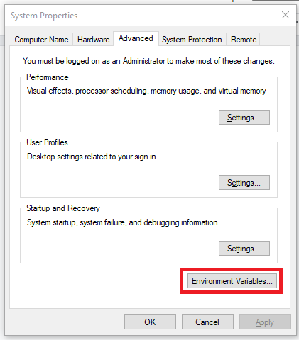
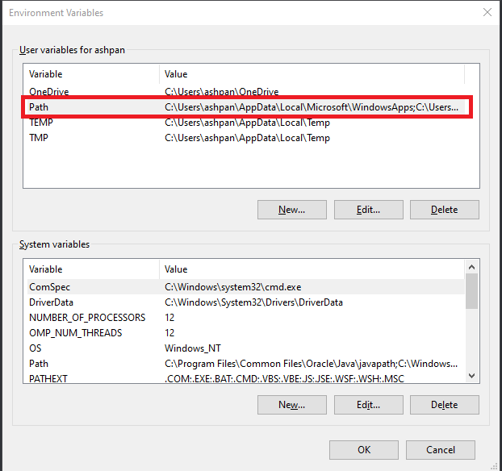

Restoring your System Configuration
If you wish to, you can restore your original system configuration with the following steps.
Linux and WSL
-
Remove the environment variables
-
Open your shell’s configuration file (ex. ~/.bashrc for Bash), and remove the
JAVA_HOMEandPATHexports that you added:export JAVA_HOME=$(readlink -f /usr/bin/java | sed "s:bin/java::") export PATH=$JAVA_HOME/bin:$PATH export PATH=<path to Maven folder>/apache-maven-3.8.6/bin:$PATH # Only present if you manually installed Maven -
Run
source <config file>to load your changes into the terminal.
-
-
Restore Java alternatives
-
If you already had another version of Java installed, you can switch back to it:
-
Ubuntu:
sudo update-alternatives --config java -
Fedora:
sudo alternatives --config java -
Arch:
archlinux-java set <existing Java installation>
-
-
-
Uninstall the packages and unneeded dependencies
-
Use your package manager to remove the packages. If you installed Maven manually, you should remove it from the command:
-
Ubuntu:
sudo apt-get autoremove maven git openjdk-11-jdk -
Fedora:
sudo dnf remove maven git java-11-openjdk-devel -
Arch:
sudo pacman -Rs maven git jdk11-openjdk
-
-
-
Test results: in the terminal run the commands
java --versionandmvn -v. The message should match what appeared before the configuration.
Windows 10/11
-
Remove the environment variables
-
Search for "Edit the system environment variables" in your Start menu.
-
Click on "Environment Variables".
-
Now double click the "Path" under "User variables for
<Windows username>".
  -
Delete the entries associated with Maven and Java, then click Ok to close all windows. For example:
C:\Program Files\Java\jdk-11.0.15.1\bin C:\maven-3.8.6\bin -
Close and reopen any Command Prompts open to make changes take effect.
-
-
Uninstall the program files
-
Remove Maven by deleting the extracted folder (ex. C:\maven-3.8.6)
-
Remove Java using Windows Settings:
-
Search for "Remove programs" in the Start menu, and select "Add or remove programs".
-
Find the one labelled "Java™ SE Development Kit" and select it (click the title on Windows 10, click the 3 dots on Windows 11).
-
Select "Uninstall" and follow the prompts.
-
-
Remove Git using Windows Settings:
-
Search for "Remove programs" in the Start menu, and select "Add or remove programs".
-
Find the one labelled "Git" and select it (click the title on Windows 10, click the 3 dots on Windows 11).
-
Select "Uninstall" and follow the prompts.
-
-
-
Test results: Open a Command Prompt and run the commands
java --versionandmvn -v. The message should match what appeared before the configuration.
macOS
-
Remove the environment variables and symbolic links
-
Open your shell’s configuration file (ex. ~/.zshrc for Zsh), and remove the
JAVA_HOMEandPATHexports that you added:export JAVA_HOME=$(/usr/libexec/java_home) export PATH=$JAVA_HOME/bin:$PATH export PATH=$PATH:$MAVEN_HOME/bin # Only present if you manually installed Maven -
Run
source <config file>to load your changes into the terminal. -
Remove the symbolic link for Java:
sudo rm /Library/Java/JavaVirtualMachines/openjdk.jdk
-
-
Uninstall the program files and their dependencies
-
Homebrew:
brew remove java11 maven git brew autoremove -
Manual install:
-
To uninstall Java, follow these steps.
-
To uninstall Maven, remove the folder Maven was extracted into:
sudo rm /Users/mkyong/apache-maven-3.6.3/ -
To uninstall Git, open a terminal and enter the following to run the uninstaller script:
/usr/local/git/uninstall.sh
-
-
-
Test results: Open a terminal and run the commands
java --versionandmvn -v. The message should match what appeared before the configuration.
Temporary Environment Variable Configuration
You can choose to temporarily set the environment variables by directly entering them as commands into the terminal or Command Prompt. In this case, they will only be in effect for the current session. For example, see the commands to configure Java:
-
Linux/WSL/macOS:
export JAVA_HOME=$(/usr/libexec/java_home)andexport PATH=$JAVA_HOME/bin:$PATH -
Windows 10 & 11:
set PATH=%PATH%;C:\path\to\Java\bin
However, these will reset to their original values once the terminal window/tab is closed, and won’t be available to any programs not launched by the terminal. For example, if you use IntelliJ IDEA on Linux, you will have to launch it from the terminal using the idea.sh command. Only use this method if you understand the implications.